R.A.D.
R.A.D. I don't ever remember really collecting robots, but I seem to have an awful lot of them, so I figured they should get their own page.
R.A.D. This is R.A.D. from 1999, he's such a damn rich kid present, I don't know how I talked my parents into this one.. Any way, he shoots and carries things and is all around awesome.
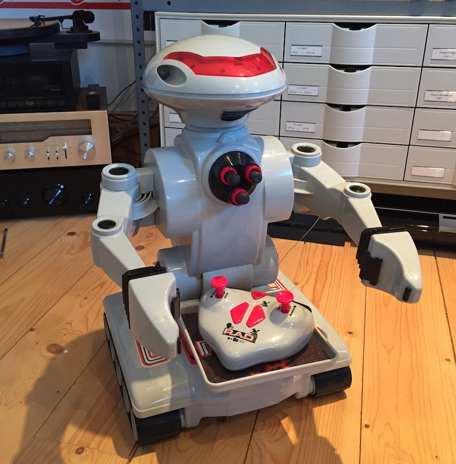 Real Robots Cybot So this was like a build it yourself robot from a magazine in 2002, every week youd get a few parts and after about a year you had this thing. OMG what a pain of a robot this is, It was a pain to build and a pain to use. You had to toggle these little dip switches inside to change modes. Then he would sort of follow a line, at least that was the one thing that sorta kinda worked. Anyway, I finished the first season of it. The basic robot. Must have been cheap as heck becouse half the caps in it have leaked and all it does is turn on two LED's cleverly labelled "Red LED" "Green LED".
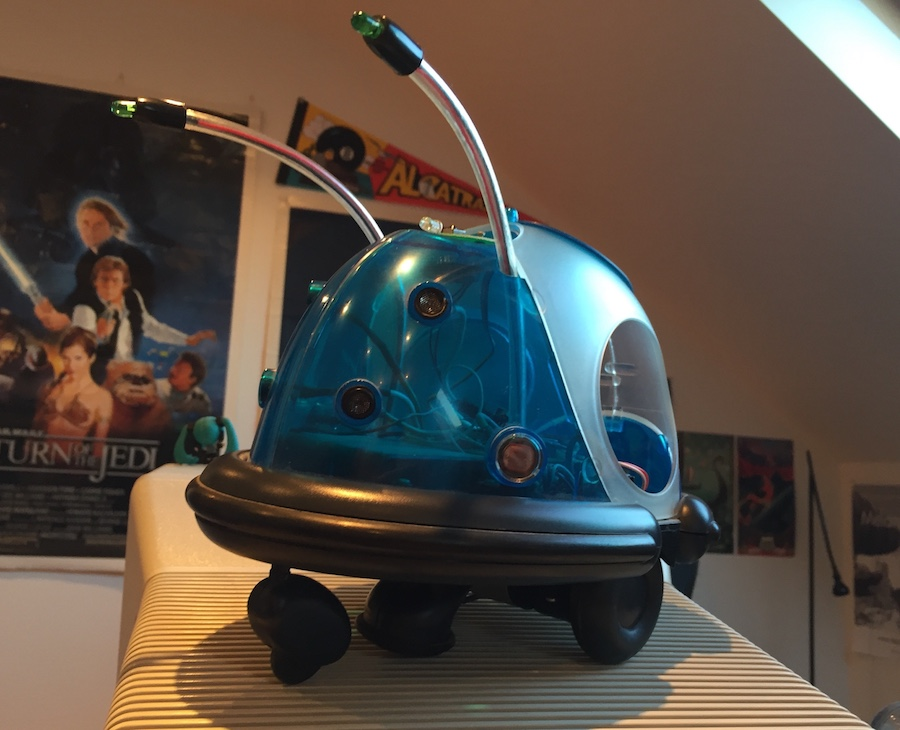 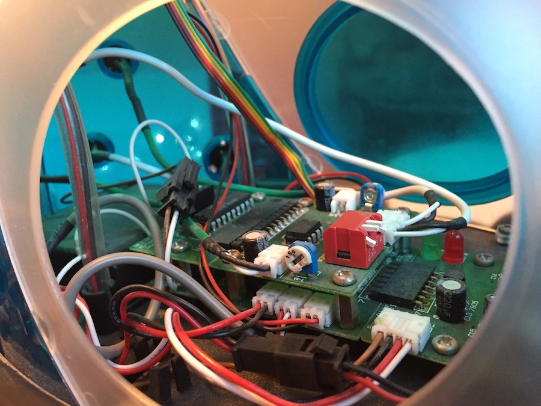 Emergency Emergency Danger! I dont think this one has a fancy name, hes just ballin af. He runs around and has this inferred gun that you can shoot him with and overall is just very cool and you should buy one. Id guess hes about 2000ish
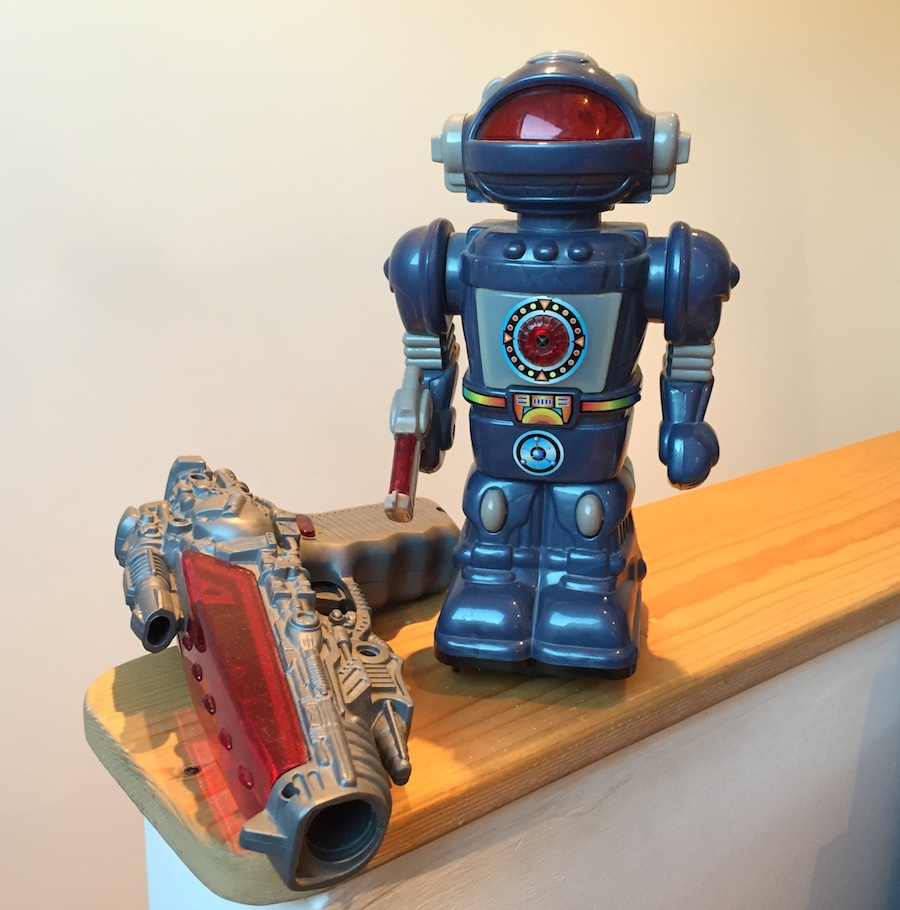 The Other Guys! First up we have the Smoking Space Man, hes made of tin and smokes when he has like 500000 batteries.
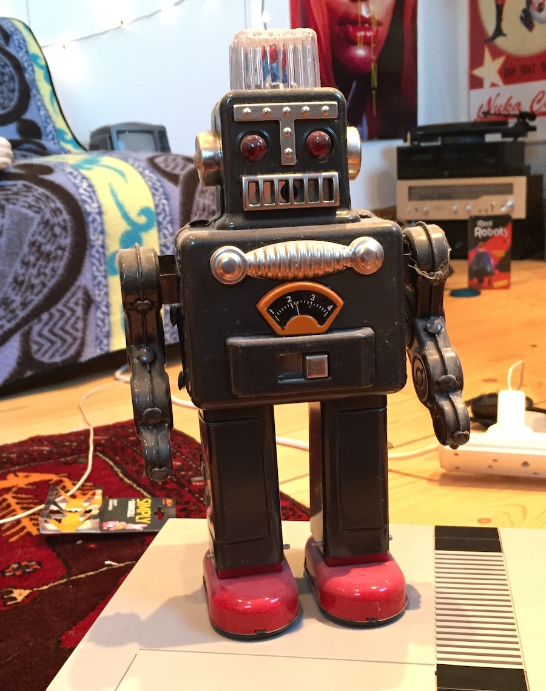This lil guy climbs on windows, for about 30 seconds, then he falls and breaks, but thats all so you buy more I guess :D
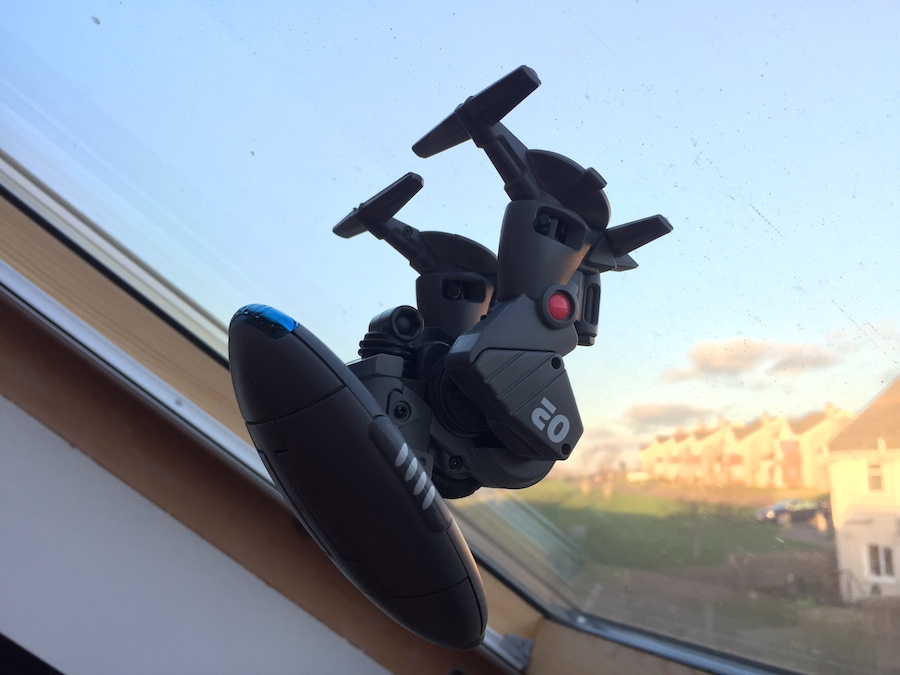I think you can still get these as of 2016, This ones from bout 2007, hes similar to RAD in terms of functionality, but lamer is basically every way and does not shoot stuff.
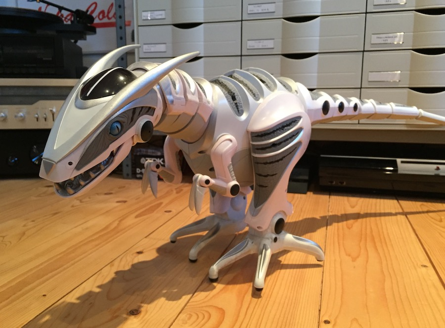This guy has some bangn tunes! I think I got him in about 2004, when I burnt my finger really bad and my dad got this to make me feel better.
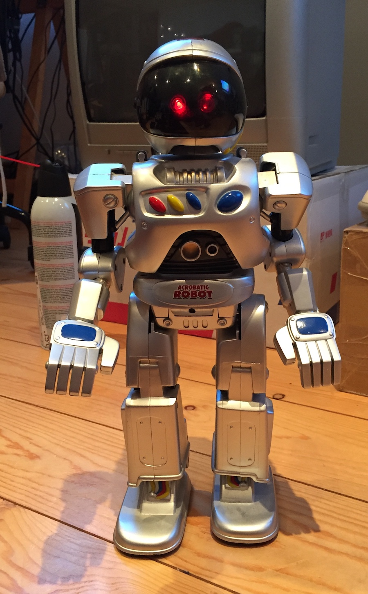Im sure ROB is in my old tech section, but hes a robot too so welcome to the party!

I found this with my mom when we used to search through peoples trash in Spain in 1997. But really, people would just dump stuff on the street and thats where I found him. He turns into a friggin space ship!
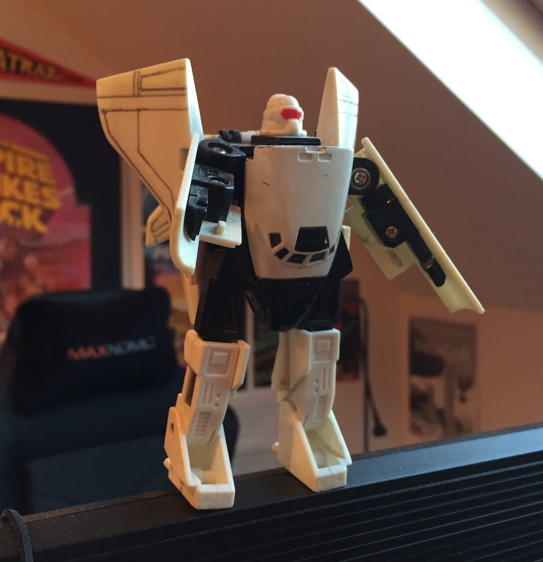Heres a bunch of lil guys!
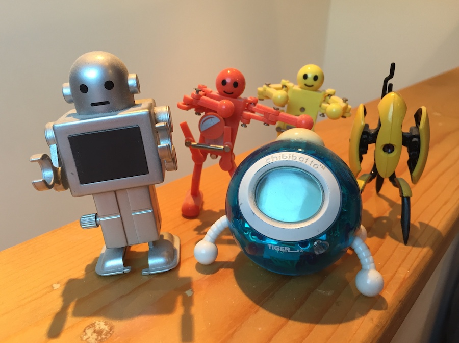 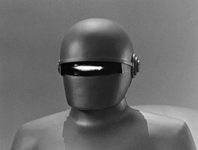